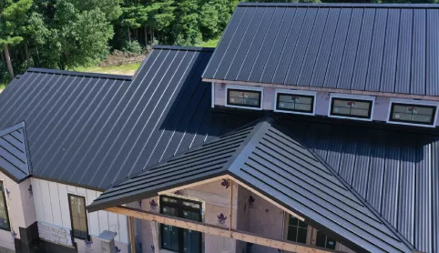

Eco-friendly Roofing Services in Travis County
Our Austin, TX and Travis County team specializes in standing seam metal roofs and stone coated steel metal roofs to provide our customers with high quality and eco-friendly roofing options. Our experienced team also helps customers with shingle and tile roofs damaged by hail and windstorms that frequently hit Travis County, TX.
We're proud to be a local company deeply connected to the Austin, TX community. Our team lives and works in the area, giving us an intimate understanding of local building codes and the specific roofing needs of properties in the communities.
Whether you need a complete roof replacement, emergency repairs after a storm, or regular maintenance to extend your roof's lifespan, our Austin, TX and Travis County roofing experts are here to help with prompt, professional service for metal, tile, and shingle roofs.
Our Travis County Roofing Services
Residential Roofing
Protect your Travis County home with our premium residential roofing solutions, from traditional asphalt shingles to more environmentally friendly and energy-efficient metal options.
Commercial Roofing
Durable commercial roofing systems for businesses throughout Austin, TX and Travis County, designed to minimize disruption and maximize the longevity and durability of your roof.
Roof Repair for Wind or Hail Damage
Fast, reliable roof repairs for Travis County properties, addressing damage from storms, aging, or other issues.
Leak Repair
Expert leak detection and repair services to protect Travis County homes and businesses from water damage.
Tile Roofs
Beautiful, long-lasting Spanish, Clay, and Concrete tile roofing options perfectly suited to Travis County's climate and architectural styles.
Metal Roofs
Eco-friendly metal roofing solutions that stand up to Travis County's hot summers and severe weather events.
Need Roofing Services in Travis County?
Whether you're in Austin, Westlake, Lakeway or anywhere else in Travis County, Green Shield Roofing is here to help with all your roofing needs. Contact us today for a free inspection and estimate.
Contact Us Today